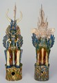

|  |
Chinese (Tang dynasty) |
The ancient Chinese believed wholeheartedly in an afterlife, and during the Tang dynasty they continued their long-established practice of placing clay figures in the burial chambers of their dead. These burial sculptures, called ming ch'i (ming-chee) or "spirit articles," were placed in tombs to accompany and protect the dead in the afterlife. The greatest number of sculptures were made during the early Tang. In fact, a special imperial government office was created for the production and supervision of ming ch'i.
Funeral processions at this time were extravagant and festive occasions. An ancient chronicler explains that the dead were accompanied to their graves by great crowds who were entertained, in tents and pavilions along the route, with food, wine, actors, acrobats, and women.1 Some families were faced with financial disaster in efforts to compete with their neighbors. Eventually, an imperial decree issued in A.D. 742 set limits on the size and number of tomb pieces allowed, according to the rank of the deceased. For example, dignitaries of high rank were allowed up to seventy pottery figures, while commoners were permitted fifteen.2
Notes
1. Mario Prodan, The Art of the T'ang Potter (London: Thames and Hudson, 1960), p. 64.
2. Robert Jacobsen, "Ceramic Tomb Sets of Early Tang," The Minneapolis Institute of Arts Bulletin 64 (1978-80), p. 21.

Key ideas.
Where does it come from?
What does it look like?
How was it used?
How was it made?
Discussion questions.
Additional resources.
Select another piece.